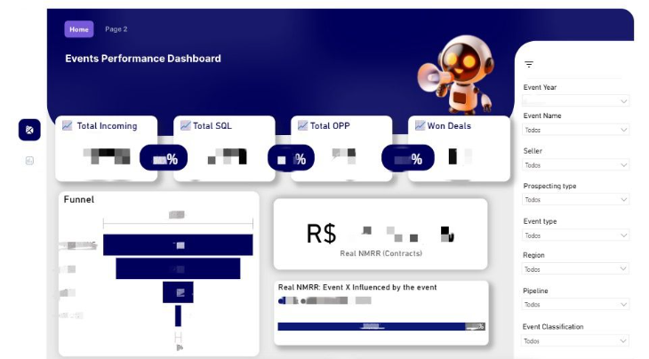
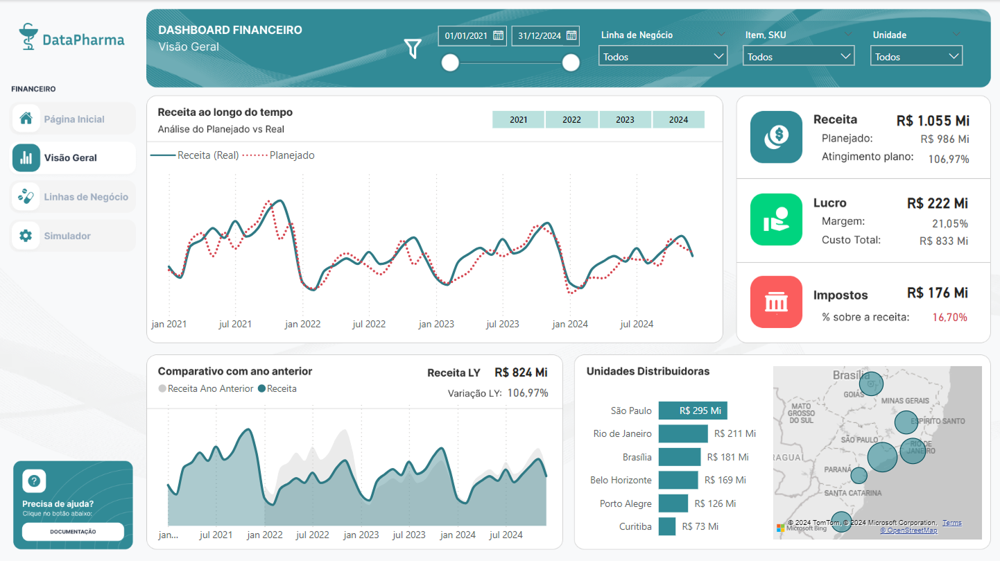
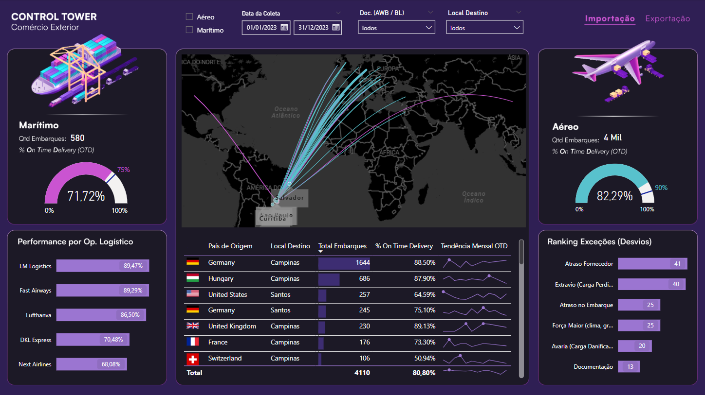
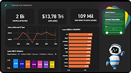
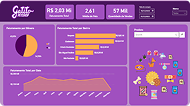
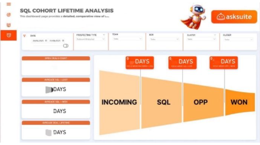
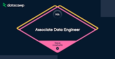

Hello! My name is
Analytics Engineer · Revenue Operations · AI & DataOps Automation
"I don't build dashboards. I build systems that turn data into decisions — and decisions into revenue."
Analytics Engineer at Asksuite — a global B2B SaaS platform for the hospitality sector. I own the full data stack: from pipeline architecture and data modeling to AI-powered automations that drive business outcomes across international markets. I work closely with Sales, CS, and Product teams in Latin America, North America, and Europe.
View Projects Dashboard Portfolio Contact MeTech Stack
End-to-end pipeline design, from ingestion to delivery. SCD Type 2, Star Schema, ETL/ELT.
Self-service dashboards with correct historical modeling and revenue-focused metrics.
Agentic pipelines with closed feedback loops. Systems that audit and improve themselves.
Multi-cloud data infrastructure for scalable ingestion, storage, and transformation.
GTM automation, funnel modeling, and pipeline analytics across international markets.
Engineering & Automation
N8N · Claude · Slack API · Google Sheets
Eliminated a 5-day manual churn classification process and replaced it with a self-improving monthly pipeline. A Classifier Agent (N8N) reads diagnostic data and maps churn drivers automatically. An AI Judge (Claude) reviews outputs and auto-corrects inconsistencies before delivery to Slack every last day of the month.
The audit module via Claude Code calculates classification accuracy, surfaces errors, and generates a training spreadsheet — the system gets smarter with every cycle without human intervention.
Clay AI · N8N · BigQuery · Google Sheets
Proposed and implemented Clay AI for the GTM stack. Built an end-to-end outbound workflow that cut the demand generation cycle from 7 days to 1 day. Automated lead scoring and enrichment pipeline pulling firmographic and behavioral data into the CRM.
Implemented data governance standards across 600K+ rows, improving quality for global GTM teams. Dashboard adoption increased 80% after the data quality revamp.
BigQuery · Power BI · SQL · DAX
Event performance was measured in attendance and reach — with no connection to financial return. Built an end-to-end funnel from attendance to pipeline to closed revenue, with payback modeling (time-to-recover-investment) for each event type and market.
Changed the internal conversation from surface-level engagement to sustainability and return — enabling better budget allocation across international markets.
Power BI · Claude · Microsoft MCP · DAX · BigQuery
Integrated Claude directly into the Power BI semantic model via Microsoft MCP, with business logic injected (NRC, MRR, CS funnel). Audits now surface the exact table, field, value, and business context behind any discrepancy — in natural language with a full evidence trail.
Board-level data audit time cut from 20+ hours to ~10 hours/month. DAX measures generated from plain-language requirements.
BI Portfolio

Most dashboards show what happened. Few show whether it was worth it. Built to answer one question: are our initiatives actually paying off? End-to-end funnel from attendance to closed revenue, payback modeling per event type and market, and a single source of truth for Product and Business teams. Shifted the conversation from "How many users attended?" to "Which events are truly sustainable?"

Track cash flow over time, calculate profit margin (%), analyze expenses by category, and measure the representativeness of costs by department.

Conduct logistics network analysis (network design) with metrics to control freight costs, evaluate transportation performance, and identify the most frequently used vehicle types in operations.

Interactive dashboard for monitoring and analyzing cybersecurity threats, vulnerabilities, and security metrics in real-time.

Comprehensive analytics solution for petshop business intelligence, featuring sales trends, customer behavior, and inventory management.

This dashboard tells you how fast deals moving — and where they get stuck. Built around time intelligence: deal velocity by funnel stage (prospecting → qualification → proposal → close), cohort analysis by deal start date, and bottleneck identification across stale deals. Shifted the conversation from "How many deals do we have?" to "Where in the funnel are we losing momentum?"
Principles
Data without business context doesn't generate decisions — it generates confusion. Every model I build starts with: what will someone actually do with this?
Real automation includes the feedback loop — a pipeline that runs but never improves is just deferred manual work. I build systems that audit themselves.
Historical accuracy is not optional — if your data model doesn't handle organizational changes correctly, your metrics are lying to you.
Frameworks fail without context — RevOps playbooks, data mesh principles, agile sprints: all useful, all wrong when applied without understanding the specific business reality.
Currently Building
Multi-agent workflows with closed feedback loops that improve over time without human intervention.
Structured ingestion, transformation, and delivery at scale — with observability built in from day one.
Orchestration, data contracts, and pipeline observability with dbt + Snowflake.
Technical content on RevOps + analytics engineering for the Portuguese-speaking data community.
Get in Touch
Open to conversations about analytics engineering, Revenue Ops, agentic AI systems, and international GTM data strategy.
Certifications

Associate Data Engineer — Datacamp